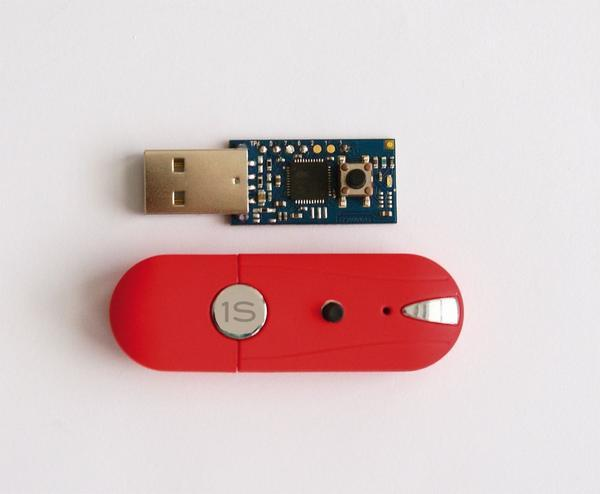

  <h2 id="pubs">Veröffentlichungen</h2>
  <ul>
    <li><a href="http://journal.embedded-projects.net/index.php?module=archiv&action=pdf&id=2">Ansteuerung eines Touchscreens mit einem AVR</a>, Embedded Journal, Ausgabe 2, Seite 24
      <p></p></li>

    <li><a href="http://journal.embedded-projects.net/index.php?module=archiv&action=pdf&id=3">UART ohne Kabel...</a>, Embedded Journal, Ausgabe 3, Seite 17
      <p></p></li>

    <li>Open Kubus: <a href="http://www.linux-magazin.de/Heft-Abo/Ausgaben/2009/08/Fremde-Finger">USB-Dongle tippt Passwörter</a> &ndash; Linux Magazin Ausgabe August 2009
      <p></p></li>
  </ul>
